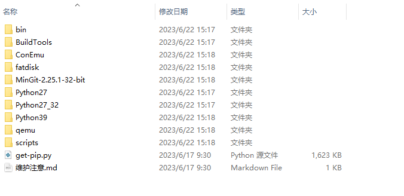

SConstruct
SConstruct，一般简称为 SCons，全称为 Software Construction Tool，是一个用 Python 编写的开源构建工具，旨在改进和自动化软件构建过程。SConstruct 提供了一种更简单、更可靠且高效的替代传统构建系统如 GNU Make 的方案。
Luban-Lite 使用 SConstruct 来实现自动化构建。
基本用法和特点
SCons 使用 SConstruct 和 SConscript 文件来组织源码结构。
在大型项目中，通常会有一个 SConstruct 和多个 SConscript 文件，分别位于含有源代码的子目录中。原则上每个存放有源代码的子目录下都会放置一个 SConscript，但譬如 BSP 的驱动开发等会集合所有的驱动源码到一个 SConscript 中。
-
SCons 使用 Python 脚本做为配置文件，具有强大的表达式力和灵活性，允许执行复杂的逻辑和操作。
-
Python 的跨平台特性使得 SCons 自然支持多平台，可以无缝地在 Windows、Linux 及其他操作系统上运行，无需修改构建脚本。
-
自动检测源文件和头文件之间的依赖关系，确保只有在必要时才重新构建项目。
-
支持多种编程语言，包括 C/ C++/ D/ Java/ Fortran/ Yacc/ Lex/ Qt/ SWIG 以及 Tex/Latex，扩展性好，支持用户自扩展编程语言。
-
支持 make -j 风格的并行构建，允许同时运行多个工作，以利用多核处理器的优势，提高构建速度。SCons 管理并行任务时会考虑文件层次结构和依赖性，避免构建错误。
-
使用 Autoconf 风格自动查找系统上的头文件，函数库，函数和类型定义，简化了跨系统构建配置的复杂性。
-
基于 MD5 识别构建文件是否发生变化，比传统的时间戳更精准和安全。
环境安装
-
Windows
Luban-Lite 具有小体积，良好的兼容性，以及快速的特点，尤其是在命令行的开发和构建方面，推荐在 Windows 系统上进行操作。
Windows 下的对应工具存放在 luban-lite/tools/env/tools 目录中，不需要安装。
 -
Linux在 Linux 系统上设置 Luban-Lite 固件构建环境，需要安装关键的依赖包，包括：注： 推荐使用
apt-get命令直接安装目标软件和依赖。-
python2 + SCons
安装 SConssudo apt-get install scons
-
python3 + pycryptodomex
安装 pycryptodomexpycryptodomex 是一个 python 编写的加密包，Luban-Lite 中有源码包可以进行编译安装
sudo apt install pip cd tools/env/local_pkgs/ tar xvf pycryptodomex-3.11.0.tar.gz cd pycryptodomex-3.11.0 sudo python3 setup.py install
-
SConstruct
- 配置编译逻辑：通过定义一系列的规则和依赖关系，SConstruct
脚本可以自动化编译流程。
相关规则可以指定如何从源代码生成目标文件，包括编译器选择、编译选项及链接过程。用户可以在 SConstruct 中定义不同的编译配置，例如调试版本和发布版本，每种配置可以有不同的编译器选项和优化设置，从而满足不同环境下的构建需求。
- 设置全局环境变量：SConstruct
提供了设置全局环境变量的功能，如编译器路径、包含目录等，确保构建过程能在正确的环境下执行。
通过调整环境变量，Luban-Lite 可以适应不同的操作系统和工具链，提高构建系统的灵活性和兼容性。
import os import sys # Luban-Lite root directory AIC_ROOT = os.path.normpath(os.getcwd()) # luban-lite custom scripts aic_script_path = os.path.join(AIC_ROOT, 'tools/scripts/') sys.path.append(aic_script_path) from aic_build import * chk_prj_config(AIC_ROOT) PRJ_CHIP,PRJ_BOARD,PRJ_KERNEL,PRJ_APP,PRJ_DEFCONFIG_NAME,PRJ_CUSTOM_LDS,MKIMAGE_POST_ACTION = get_prj_config(AIC_ROOT) PRJ_NAME = PRJ_DEFCONFIG_NAME.replace('_defconfig','') PRJ_OUT_DIR = 'output/' + PRJ_NAME + '/images/' AIC_SCRIPT_DIR = aic_script_path AIC_COMMON_DIR = os.path.join(AIC_ROOT, 'bsp/artinchip/sys/' + PRJ_CHIP) AIC_PACK_DIR = os.path.join(AIC_ROOT, 'target/' + PRJ_CHIP + '/' + PRJ_BOARD + '/pack/') # Var tranfer to SConscript Export('AIC_ROOT') Export('AIC_SCRIPT_DIR') Export('AIC_COMMON_DIR') Export('AIC_PACK_DIR') Export('PRJ_CHIP') Export('PRJ_BOARD') Export('PRJ_KERNEL') Export('PRJ_APP') Export('PRJ_NAME') Export('PRJ_DEFCONFIG_NAME') Export('PRJ_OUT_DIR') # Var tranfer to Kconfig 'option env=xxx' os.environ["AIC_ROOT"] = AIC_ROOT os.environ["AIC_SCRIPT_DIR"] = AIC_SCRIPT_DIR os.environ["AIC_COMMON_DIR"] = AIC_COMMON_DIR os.environ["AIC_PACK_DIR"] = AIC_PACK_DIR os.environ["PRJ_CHIP"] = PRJ_CHIP os.environ["PRJ_BOARD"] = PRJ_BOARD os.environ["PRJ_KERNEL"] = PRJ_KERNEL os.environ["PRJ_APP"] = PRJ_APP os.environ["PRJ_NAME"] = PRJ_NAME os.environ["PRJ_DEFCONFIG_NAME"] = PRJ_DEFCONFIG_NAME os.environ["PRJ_OUT_DIR"] = PRJ_OUT_DIR # rtconfig chip_path = os.path.join(AIC_ROOT, 'bsp/artinchip/sys/' + PRJ_CHIP) sys.path.append(chip_path) import rtconfig # RTT_ROOT if os.getenv('RTT_ROOT'): RTT_ROOT = os.getenv('RTT_ROOT') else: RTT_ROOT = os.path.join(AIC_ROOT, 'kernel/rt-thread/') os.environ["RTT_ROOT"] = RTT_ROOT sys.path.append(os.path.join(RTT_ROOT, 'tools')) from building import * # ENV_ROOT if os.getenv('ENV_ROOT') is None: ENV_ROOT = RTT_ROOT + '/../../tools/env' os.environ["ENV_ROOT"] = ENV_ROOT # TARGET TARGET = PRJ_OUT_DIR + rtconfig.SOC + '.' + rtconfig.TARGET_EXT rtconfig.LFLAGS += ' -T ' + ld # add post action rtconfig.POST_ACTION += MKIMAGE_POST_ACTION # create env env = Environment(tools = ['mingw'], AS = rtconfig.AS, ASFLAGS = rtconfig.AFLAGS, CC = rtconfig.CC, CFLAGS = rtconfig.CFLAGS, CXX = rtconfig.CXX, CXXFLAGS = rtconfig.CXXFLAGS, AR = rtconfig.AR, ARFLAGS = '-rc', LINK = rtconfig.LINK, LINKFLAGS = rtconfig.LFLAGS) env.PrependENVPath('PATH', rtconfig.EXEC_PATH) # add --start-group and --end-group for GNU GCC env['LINKCOM'] = '$LINK -o $TARGET $LINKFLAGS $__RPATH $SOURCES $_LIBDIRFLAGS -Wl,--start-group $_LIBFLAGS -Wl,--end-group' env['ASCOM'] = env['ASPPCOM'] # signature database env.SConsignFile(PRJ_OUT_DIR + ".sconsign.dblite") Export('RTT_ROOT') Export('rtconfig') # Var tranfer to building.py env['AIC_ROOT'] = AIC_ROOT env['AIC_SCRIPT_DIR'] = AIC_SCRIPT_DIR env['AIC_COMMON_DIR'] = AIC_COMMON_DIR env['AIC_PACK_DIR'] = AIC_PACK_DIR env['PRJ_CHIP'] = PRJ_CHIP env['PRJ_BOARD'] = PRJ_BOARD env['PRJ_KERNEL'] = PRJ_KERNEL env['PRJ_NAME'] = PRJ_NAME env['PRJ_APP'] = PRJ_APP env['PRJ_DEFCONFIG_NAME'] = PRJ_DEFCONFIG_NAME env['PRJ_OUT_DIR'] = PRJ_OUT_DIR # prepare building environment objs = PrepareBuilding(env, RTT_ROOT, has_libcpu=False) # make a building DoBuilding(TARGET, objs)
SConscript
SConscript 是 SCons 构建系统的配置文件，用于定义构建任务和依赖关系，以支持复杂的构建过程。SConscript 脚本位于源代码树的子目录中，每个 SConscript 文件可以描述该目录下的所有构建任务，从而简化构建流程的管理和维护。
一些常用的 SConscript 方法有：
-
使用 Program 生成可执行文件
Program 用于生成可执行文件的示例如下：
Program('hello.c') 编译 hello.c 可执行文件，根据系统自动生成(hello.exe on Windows; hello on POSIX) Program('hello','hello.c') 指定 Output 文件名(hello.exe on Windows; hello on POSIX) Program(['hello.c', 'file1.c', 'file2.c']) 编译多个文件，Output 文件名以第一个文件命名 Program(source = "hello.c",target = "hello") Program(target = "hello" , source = "hello.c") Program('hello', Split('hello.c file1.c file2.c')) 编译多个文件 Program(Glob("*.c")) src = ["hello.c","foo.c"]; Program(src)
-
使用 Object 生成目标文件
Object 用于生成目标文件的示例如下：
Object('hello.c') 编译 hello.c 目标文件，根据系统自动生成(hello.obj on Windows; hello.o on POSIX) -
使用 Library 生成静态/动态库文件
Library 用于生成静态/动态库文件
Library('foo', ['f1.c', 'f2.c', 'f3.c']) 编译 library SharedLibrary('foo', ['f1.c', 'f2.c', 'f3.c']) 编译 shared library StaticLibrary('bar', ['f4.c', 'f5.c', 'f6.c']) 编译 static library 库的使用： Program('prog.c', LIBS=['foo', 'bar'], LIBPATH='.') 连接库，不需加后缀或是前缀
-
使用 Depends 明确依赖关系
Depends 用于明确依赖关系
Depends(hello,'other_file')//hello 依赖于 other_file
驱动程序的 SConscript 示例
以下是一个典型的驱动程序的 SConscript 示例，用于构建一个 UART 驱动程序。SConscript 文件示例定义了一个名为
aic_osal 的构建组，包含了 UART 驱动程序的所有源文件，并根据需要设置了头文件路径和编译选项。详情如下：
Import('AIC_ROOT') Import('PRJ_KERNEL') from building import * cwd = GetCurrentDir() src = Glob('*.c') CPPPATH = [] if GetDepend('DRIVER_DRV_EN'): CPPPATH.append(cwd + '/include/drv') if GetDepend('DRIVER_HAL_EN'): CPPPATH.append(cwd + '/include/hal') CPPPATH.append(cwd + '/include/uapi') # UART driver if GetDepend('AIC_UART_DRV'): if GetDepend('DRIVER_DRV_EN'): src += Glob('drv/uart/*.c') if GetDepend('DRIVER_HAL_EN'): src += Glob('hal/uart/*.c') LOCAL_CCFLAGS += ' -O0' //DefineGroup(name， src， depend，**parameters) group = DefineGroup('aic_osal', src, depend=[''], CPPPATH=CPPPATH, LOCAL_CCFLAGS=LOCAL_CCFLAGS) Return('group')
- 导入必要的变量和模块。
- 获取当前目录并设置源文件列表 src。
- 根据条件判断是否包含特定的头文件路径到 CPPPATH 中。
- 如果启用了 UART 驱动程序，根据条件将相应的源文件添加到 src 列表中。
- 添加编译选项 -O0 到 LOCAL_CCFLAGS。
- 使用 DefineGroup 函数创建一个名为
aic_osal的构建组，其中包含源文件、依赖项、头文件路径和编译选项。 - 返回创建的构建组。
应用程序的 SConscript 示例
以下是一个典型的应用程序的 SConscript 示例，用于构建一个多媒体播放器：
Import('AIC_ROOT') Import('PRJ_KERNEL') from building import * cwd = GetCurrentDir() path = [cwd + '/include'] path += [cwd + '/base/include'] path += [cwd + '/ge/include'] path += [cwd + '/ve/include'] path += [cwd + '../../../bsp/artinchip/include/uapi'] path += [cwd + '/mpp_test'] if GetDepend(['AIC_MPP_PLAYER_INTERFACE']): #audio decoder path += [cwd + '/middle_media/audio_decoder/include'] path += [cwd + '/middle_media/audio_decoder/decoder'] #base path += [cwd + '/middle_media/base/include'] path += [cwd + '/middle_media/base/parser/mov'] path += [cwd + '/middle_media/base/parser/rawdata'] path += [cwd + '/middle_media/base/stream/file'] src = [] CPPDEFINES = [] # mpp if GetDepend(['LPKG_MPP']): src += Glob('./base/memory/*.c') src += Glob('./ge/*.c') src += Glob('./fb/*.c') src += Glob('ve/decoder/*.c') src += Glob('ve/common/*.c') src += Glob('ve/decoder/jpeg/*.c') src += Glob('ve/decoder/png/*.c') src += Glob('ve/decoder/h264/*.c') src += Glob('./mpp_test/*.c') if GetDepend(['AIC_MPP_PLAYER_INTERFACE']): #audio decoder src += Glob('middle_media/audio_decoder/decoder/*.c') src += Glob('middle_media/audio_decoder/decoder/mp3/mp3_decoder.c') //DefineGroup(name， src， depend，**parameters) group = DefineGroup('mpp', src, depend = [''], CPPPATH = path, CPPDEFINES = CPPDEFINES) Return('group')
- 导入必要的变量和模块。
- 获取当前目录并设置头文件路径列表 path。
- 根据条件判断是否包含特定的头文件路径到 path 中。
- 初始化源文件列表 src 和编译选项列表 CPPDEFINES。
- 如果启用了多媒体播放器接口，根据条件将相应的源文件添加到 src 列表中。
- 使用 DefineGroup 函数创建一个名为 mpp 的构建组，其中包含源文件、依赖项、头文件路径和编译选项。
- 返回创建的构建组。